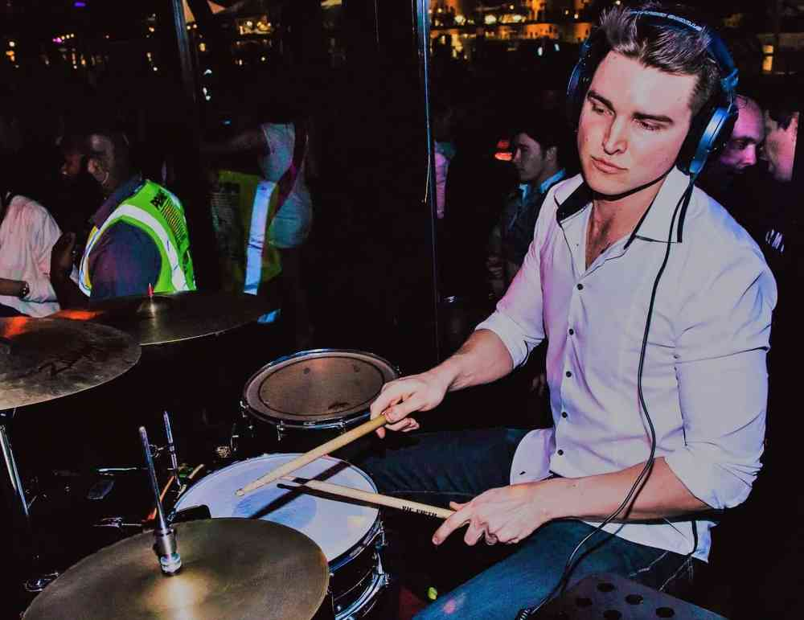

Check out what I've been up to and what I'm drumming up in Canberra.
I'll be sharing my thoughts, reflections, tastes and feels.

What Does Inspiration Look Like?
-Much Love 3:57pm 20/03/2020 -By me.
I love watching something I don't understand. Alan Holdsworth, Virgil Donati, Dillinger Escape Plan, Meshuggah, Thomas Lang, Herbie Hancock, Chick Corea. I love these musos and bands. Even being a professional musician, I would have no idea where to start to learn the songs that these muso's create. It's as if they were transcending some alien-like telepathy when they were in the practice room and everyone in those bands somehow could intercept the signal.
I also think these types of bands are a great source of inspiration for the muso community who have been in the game for a while.
Do me a favour and try to imagine Alan Holdsworth playing "Sweet Child Of Mine" at a covers gig down the road at your local pub. I don't know about you, but I can't see it. Frankly, I don't think he could get paid enough for that kind of gig.
Conversely, Slash, (who wrote that riff) an absolute beast of a guitarist as everyone knows - would be happy to play it again for a small fortune I'm sure. He among many others has been paid handsomely for playing that riff.
It's crazy to think that in 2020 young students pay people just to learn how to play "Sweet Child Of Mine." A riff that was written as a joke string skipping exercise by Slash in the late 80's. Yep, that's over 30 years ago! I agree, it's a strange world that we live in.
So where does this leave us?? Well, the last thing I want to do is learn how to play a song that adds to the problem so many of us get caught up in. Us muso's learn 40 iconic songs and we play the same songs every weekend for the rest of our lives and then we get bored of playing music for $$ so we stop playing music all together... Noooooo!!
I'm trying my best to not make that mistake again. More importantly, I don't want you to make this mistake at all.
Let me tell you something you already know, but still may be helpful.
As musicians, we need to be constantly learning. Please don't ever forget this!! this is key to growing as a musician and as a human being. But I hear you saying, "Seriously! why else do we need to do this?? I don't have time!" Because we love it remember!? New songs, new styles, new techniques, new instruments, new bands. This one aspect is our saving grace from becoming what we all don't need in our lives.. Feeling jaded or resentment. It's a useless and disabling feeling that gets you nowhere.
Learning new skills is such an empowering thing to do for yourself. I'd imagine that all the artists like Alan Holdsworth or Thomas Lang don't get to that jaded state because they are the types of people that push themselves to the next level and the next level after that!... For instance, did you know Thomas Lang has produced over 600 Albums??.. I just found this out the other day! I knew him as the insanely talented drummer that looked like Arnold Schwarzenegger. It's another example of someone who is always learning. A new song, technique, genre, instrument or a new facet of the musical world; music business, audio engineering, copyright law, sound design, sales and marketing. Don't make the same mistakes I did. Say it with me "Always learn something new."
So I wanna be a buff personal trainer... Wait.. what!?
OK so, I have no intention of getting a new job, but I think the image is powerful. It conveys that before the "Buff Personal Trainer" says or does anything in the gym. You know he or she has put in the work and knows how to train. I would like to be considered in the same way. Although, as a muso, this can be tricky.
I would love people to look at my work and my website and say. "There's a guy who knows his shit, I wanna work with him," hey a guy can dream right!?.. Haha!
Isn't that crazy though? I've been playing music for nearly twenty years and I feel like I'm only just learning about what it takes to be a "Buff Personal Trainer."
I'm big on doing music on my terms at the moment. Meaning: I want music to influence my lifestyle in a positive way rather than go against the grain of everything I've worked hard for in my career, it's so easy for music to clash with a full-time job. For me, this approach is really working and I couldn't feel more positive about it. Lately, I've been learning some of my favourite songs, learning how to sing, record, master, distribute and market.. OMG, I'm exhausted hahaha!
And still, I'm so keen to work harder, push more, do more and produce more. I get super excited. There's something to be said about doing something that creates urgency. Lately, I've been getting these intense urges to race home halfway through work and produce more songs. It's such a nice feeling.
But let's not forget I'm human and I have all these thoughts that easily crush this feeling of productivity. My brain kicks into hyperdrive from time to time and fear creeps in. Where is this going? Where is the end of this pursuit? I feel like I just keep adding to my list and I want to learn more and more songs. What if I record and release 10 songs this year? What if I do 50? Then what? Is the point to do it easily and quickly? Is it to get gigs? Is it submit songs to radio stations? Is it to develop my sound for originals? Is it simply the pursuit of learning a new skill?
The best way I've found to crush this flood of self-doubt so far is: I have so many more options by learning this stuff than not learning any of it. If I keep learning how to learn songs, sing, record, master, distribute, market. Who knows where these skills could lead me.
OK so hopefully it makes sense why I want to be the buff personal trainer. I want to have credit and validity on sight. Time to lift some weights 😉.
If you had a teacher come to you and say, "You need to work on your performance," what comes to mind? My first thought is: theatrics, movement and acting but I know this is far from what we want to do as musicians. If we wanted to act, we'd be actors... Right?!
I believe at the core of "performance" is the intent to connect with what you are playing, it's how you want to present your music. Knowing what to do specifically however is the tricky part. If I try to imagine myself pouring my heart and soul in to what I'm playing I get a good picture of what it looks like. But the intriguing question that keeps pulling me back in is; where do you draw the line between performing and acting?
I think Intent is a good word because even if you don't get to where you're going, you were pedalling in the right direction. So if we're not intending to connect with what we're playing as muso's, we are not performing, at best, we're acting, and at worst, we're uninterested and therefore, uninteresting.
The word 'acting' brings up all kinds of gross images to me. Images of phony musos sounding shit on stage, playing shit music and forcing themselves to look like a rock star - I don't know about you but cover bands come to mind (not all cover bands, but unfortunately there are some doozeys out there). The truly great performances you've encountered had one thing in common, and they all have this power over us. They have this ability to get under our skin where you aren't thinking and only experiencing. It hits that part of us, forcing us to be inspired or cry or get goosebumps. Isn't that one of the beautiful things about music?
This brings me to another point. Performance isn't just about music that you see in the flesh. It's not only about flailing guitars, hair flicks and dance moves. It's about the recording space too. If you work with a recording engineer you'll hear them talk about the importance of a musical performance all the time. So why is this so important? No one can see you anyway.
Well, I'm not a recording engineer but I know that the last thing they want to do is spend days cutting up tracks in editing. They'll also tell you they can hear a good performance next to an edited track.
This is why I think it comes back to 'the intent to connect.' - if we try our best to connect and mean to play as good as we possibly can, expressing our selves through our instrument. Hopefully we are pouring out more than just musical notes. The ideal for me would be to pour out more feelings and experiences for the people I may play in front of. To give them space to be both in front of me and somewhere else. That's performing!
This song is one of my favourites and it seems to keep following me wherever I go. I've been learning more and more about audio engineering to record this song myself and to my surprise, I'm actually happy with this one. I hope you enjoy my version of John Mayers 2006 released song - "I Don't Trust Myself (With Loving you)."
Let's play!
-much love 4:45pm 23/01/20 - by me.
Success for me is to have managed and designed my life to take care of every facet of my life. Financially, healthwise, relationships, friendships, dreams and goals. If I have to sacrifice certain things to manage all of these things I will, even drums!
In my 20's I would have kicked my own ass for saying something like this. My life revolved around music. I sacrificed a lot to get to be a professional drummer: Best friends weddings, birthdays, new years celebrations, Friday and Saturday night drinks for years, opportunities to build a more stable career. I used to think it would come back to me in a good way later down the track.. and maybe it will, who knows!? I had a great time in my 20's, don't get me wrong. But I guess I was met with the frustrations that most musos have in their career. I can say that 10 years later, I've learned a lot about about being a working musician. But I did not solve my problem the way I would have liked to.
One thing that makes more and more sense to me now is drums isn't everything. (shocking right?!) I had this idea that if I pour everything I have in to practising and playing live, I'd be developing an infallible career in something that was rare. In concept, this sounds right, but I can tell you from experience that having this concept in my head is one thing, but executing is quite another. It was as if I had a great idea in my head, but sadly it stayed there.
I'm not saying that you can't have that 'infallible career in something that is rare,' as I mentioned before. I know you can because a lot of people have done it before. I guess I'm saying/warning you that it's also possible that you can spend more than 15 years doing something you love and not get where you wanted to go, this kind of thing doesn't just work itself out over time. Part of this blog is to help me look at my life objectively to see where I made mistakes so others can do better than me.
The idea of things working themselves out over time is interesting. When your practising drums, this idea/concept makes sense but not when you try to apply it to a career, I'll explain what I mean.
Let's start with rudiments and drum beats. you can workout and play these within a minute to 10 minutes - simple. There also those things that are in the back of a drummer - or any muso for that matter - that takes years of practice! It maybe a technique nuance or a stylistic dynamic or maybe it's a 'feel thing'. These things exist and I think it's key to a genuine pursuit to excellence. So our concept makes sense here as long as your practising the techniques or the genre, your end goal will work itself out.
So with this idea in mind, let's apply it to a career mindframe, please let me know if you've said this to yourself... "If I practice 10 hours a week, the rest should work itself out." Sure, discipline helps but your not looking at the whole problem. I know because, I used to tell myself the same thing. Let me tell you that you would better spend your time by having these basic things in place:
Website
Business cards
Register yourself as a business
Get an ABN
Take care of your taxes
Have a cover band (great for cutting your teeth)
Play and learn new songs all the time
Talk to people who are doing locally what you want to be able to do
Spend time being creative with your instrument or play in that band with your buddies
Don't say no to any opportunity to earn $$ that is music related,
be the guy people call for any musical situation and help wherever necessary.
But getting back to the idea "It'll take care of itself." It won't as anyone will tell you that if you own your own a business - being you as a muso - You'll only spend around 10% of your time performing music. The rest will be organising gigs, marketing, sales, social media, promotions, logistics for tours... But wait... I just wanted to play music!! Exactly! That's what I'm saying!
I stand by my earlier my earlier posts that if we have opportunities to play music, it's a beautiful thing and we are truly fortunate. That said I'm still interested in looking for a better way. Because I want my cake and eat it too! How about you?
I know for myself, I feel the need to design a system to follow, I know I work best in a structure that takes thinking out of it. This was a problem I had 10 years ago and sadly, I still have it. Wouldn't it be nice to pay muso's what they are worth and forever have opportunity. I would love to say "if you follow this formular, you will be a working musician and earn great $$ doing it." So far, I don't have this system/road map.
I like hearing questions asked to the drumming greats like:
When you can't get employed, how do you employ yourself?
Vinnie Colaiuta explains there was a time where he was living in his car, he went to jam nights, audtioned for Frank Zappa and - spoiler alert - he got the part! That was it for him... Incredible right?! It sounds almost unbelievable.
Thomas Lang talks about the sacrifices he makes to have a family. I love hearing Thomas talk about telling young muso's to build websites, learn about marketing, learn about reading music, learn about rudiments, practice 8 hours a day. It's all good!
I'm facinated reading and listening to what drummers did to facilitate being a drummer and a fulltime muso. Did they work as a security guard, did they work as a chef, what did they do for $$ or was it 100% playing live?
The smartest plan of attack I'm hearing so far is that If you want to just play your instrument, call it a hobby and get a "real job." If you want to be a professinal musician you have to wear all the hats you can to keep yourself afloat. This may be brutal, but it also sounds pretty real to me.
Thomas Lang, Tim Ferriss and John Mayer. I want to have lunch with these dudes. This would be a dream :)
I love Thomas Lang. He is so intouch with where he is and what he's doing... AND HE'S A MUSO! this means so much to me. His technique, musicality and facility is almost something that is alien. But more than that, it's his work ethic and creative energy - constantly adapting and learning - taking him to new heights, pushing boundaries of what is possible as a musician. What a guy!
Tim Ferriss is someone who is also super impressive to me. His intension and his output to the world seem to meet together to be such an integral, thoughtful and genuine person. He is in a position in life to do whatever he wants, he's designed his life that is entirely of his own doing and it's something that helps others whilst boosting him up simultaneously. What a guy!!
John Mayer seems to validate and solidify his own artistry by his work ethic and creativity. He couples with his excellent communication skills and comes across as more than a successful pop artist and a well respected and muso. I get the feeling he has been the spokesperson for a generation of bedroom singer songwriters that has 'made it' but more importantly, there is nothing about him or his career that smells of the phrase 'sell out.' I respect this so much.
These are the shoulders of giants I would want to stand on.
My intention is to put honest work into my blog, to share with my fellow muso's and to come along side them and say "you are not alone." The creative process is tricky and I want whoever reads this to find comfort being in it together. It's a beautiful thing to learn an instrument and it's even better if you want to share it with others as much as you can.
Anything to get us 'unstuck' as a muso is a fight worth fighting for.
For now, this is a platform about me, my playing, my achievements, my ideas and thoughts and the never ending pursuit of balance between a musical career and life. I already feel like I have achieved something by putting my blog up and adding to it regularly. I'm lucky to have reached this far and feeling comfortable sharing and doing my best to express it. I wasn't always the person willing to share much at all.
If you're reading this. Thanks for your support.
I'm really excited to continue learning how to code my blog too. I was never the techy kid growing up and don't consider myself being one even now. I know a professional website would probably look 5 times better and represent me in a more professional manner, but for some reason, I couldn't care less. You'll find that some things aren't perfect and don't look quite polished yet. But honestly, I value learning this skill more than how I'm being perceived right now.
I'm really enjoying the idea of learning about my process, learning about what makes me productive, what I run away from and what I can do to get back to what I love doing - no one can teach this better than me.
My main source of motivation is running away from the feeling of being stuck - I know how this feels all too well. The creative process can be a tedious and frustrating road. That feeling of being useless, unable to help oneself, feeling stuck... If you think about it, it can be pretty depressing.
When I think this way, it's not hard to imagine a world where I think the universe is telling me, I can't do what I love. I find it's even easier to think this way when I say to myself, I want to earn a six-figure income, buy a house, have superannuation or have kids or whatever...
I think these are all luxuries that we deserve. I know it's not impossible to earn good money whilst pursuing your passion, but I think it's extremely hard to get everything you want out of life by playing music. This may be obvious, but I find it an important distinction to make. It's hard enough to find your passion, let alone to pursue it and fulfill all your dreams.
Ok I'll say it... We should count ourselves lucky we get to play music in the first place.
I'm learning to use noise reduction in my DAW (Digital Audio Workstation) coupled with some EQ, Gate plug-ins and compression. I also just used a (randomly placed) SURE SM58 in the room instead of the mic on my camera. It's chalk and cheese really. So soooo much better.
As you can probably tell, I know nothing about audio engineering but I'm super happy with the distinction between these two clips on my channel. Super keen to learn more and see where this takes me :)
(reflection)
The signal is a lot clearer but also highlights some timing issues on my part. This leads me to a very important point. THIS is why - as a musician - you need to always be learning new skills, you never know what holes are in your playing if you never learn to listen out for them.
I saw some jazz that was.. Well.. Interesting. In the same way you buy an expensive coffee from a very fancy Cafe and you end up stunned with how bad it tastes.
Friends and I checked out this jazz night and similarly, we experienced this same 'stunned' feeling. There were a lot of musos in the crowd, and we quickly found out that it was like an open mic night for jazz musos. Unfortunately for us, there was no vetting process, It felt like anyone was getting up on stage. To make matters worse, "performers" would take the stage and figuratively shit on our ears for 5 minutes would then, at the end of the song - if you could call it that - ask the band if they could play another. The audacity!!
So I was in this jazz bar with my mate, the girl I was dating at the time, and her friend. After about 30 minutes of this musical ambush, the girl I was dating and her friend got up and left. Their parting words were, "life's too short". We laughed, they left and my mate and I stayed till the end. We hated it.
I look back this now and wonder why the hell did we stay till the end? Were we a gluten for punishment? We didn't even consider leaving early. The only conclusion that makes sense to me now is my mate and I are both muso types, and I think it could have been an artistic type observation that we enjoyed. Maybe it's the same concept as watching a car crash. It's so horrible but you can't look away. Haha.
Maybe it's an artistic observation. That we were able to see the beauty in the process...
I've had amazing drum tutors over the years. They've taught me so much about practising, performing, listening, technique, awareness, choices, vocabulary, styles, so much stuffs. Every tutor has had these golden nuggets of wisdom that they've given me and I wanted to take a moment to share them with you.
They've really changed the way I see performing and practising, and I consider the understanding of these concepts the difference between hobby and art. It has created perspective, clarity and maturity to my playing. I would be a completely different drummer if I wasn't willing to learn from these great teachers so I hope you can benefit from my experience.
Lloyd Gyi was my first drum tutor in high school. I attended group lessons with some of my mates once a week to see if I liked it. It turns out I ended attending these group lessons for three years - I guess I liked it.
Lloyd's main focus with all of us was the importance of time. He used to say "As drummers, we need to be a slave to the metronome."
He tirelessly taught us the basics, 8th notes, triplets and 16ths. He went on to teach us about reading music, coordination, dynamics, four-way coordination. He showed us the subtle differences that make a good drummer, a great drummer.
As I look back on our lessons and what we covered, Lloyd's approach was simple. It was really only about two things. Accuracy and control. Two things a teenager doesn't know anything about. It was as if he put a plate of musical vegetables in front of us each week. This approach didn't make him popular but I think it did great things for some of us. As for me, I'm so grateful that my first drumming experience was with Lloyd. His approach cultivated such a solid foundation and helped me learn the basics on how to crawl, so I could teach myself to run. Thank you Lloyd.
Fast forward to the Uni days, where it was part of the curriculum to have an hour drum lesson every week. They called it an instrumental major, I called it bliss.
Dave Plenty was my first drum tutor at Uni. One word comes to mind: inspiring. In my first lesson, he was showing me one concept on sight-reading and before you know it, he was playing for 20 minutes going through all these ideas that turned into more ideas. He expanded my mind to all these options I'd never even thought about working on. I found his playing and his facility on the kit to be endless. His ability, finesse, four-way independence was all at a soring level. It was nothing I'd ever seen or heard before. His approach was all about what to practice and what is "actual practice". He used to say - and I'm sure he still does - "if you practice 2 hours per day, you are only maintaining your ability." This was his watermark.
Another concept that I still adopt today is maximising your practice time. The question he always challenged himself and his students with was, "how many things can I practice at once?" If we were working on-site reading, he wouldn't open up a book, point to a page and just work on reading. He would also put the metronome on, but maybe, just on beat two. He did this to test your internal metronome and accuracy. Then, he would ask "what about your feet?!" He would then talk about what kind of ostinatos would be practical in the style of music I wanted to improve on, we'd decide on a few and then, we were ready to practice. We would end up with ear training, sight-reading, 4-way coordination, kit dynamics, technique, composure and all along the way, he would ask you questions that you had, to be honest about. "How does it feel? Does it sound good? If not, why?" That's the Dave Plenty way. I love this approach. It was about working smarter not harder, about creativity, stretching yourself and practising properly. Thank you Dave.
Andy was my tutor for my second year of uni. He is another great influence for my playing and someone that added to my skill set for sure. Andy always looked so effortless on the kit. He was someone who really looked at what he was teaching his body and focused on getting rid of bad habits. He would go as far as getting mirrors out to really look at my hands from all angles to fix little nuances that can make all the difference. He also taught me about letting microphones do the work. This approach allowed me to work with sound engineers to achieve a better tone on the kit (if it was mic'd up). He used to say "you only ever want to play 80% of how loud you can play, let the mic do the rest of the work." He taught me that the goal is to play with intensity, not to play loud. These approaches taught me that stifling your technique for loudness is a dead end. Thank you Andy.
Toby hall was my final year tutor. I found Toby had a totally different approach to Dave and Andy. Toby was fairly intellectual in his teaching method. I actually don't remember him ever sitting behind the kit. I remember spending our 1-hour lesson talking about song choice for my final work recital. We'd talk about brushwork, come to think of it, we did very little playing. I was at a stage where I was getting overwhelmed with the number of things I wanted to learn in a short amount of time. Toby would mostly talk about organising time rather than paradiddles. This was very helpful for me. He showed me that if you're highly skilled but underprepared, you aren't doing yourself any favours. Thank you Toby.
Anyway, I've had some great influences in my years of playing so far. I know I could ask them questions until their ears fall off but I know that all of my tutors would say.. Practice more, play live more, see more live music, be versatile, look for inspiration wherever you can, don't stop playing. What else do I need to know right?...
If anyone knows me, I'm someone who's known for being an optimist. I've been told I'm annoyingly happy, so this post may be a shock. If you've read my 'about page,' it states that I was sick of being broke by age 25 and wanted desperately to get a 'real job'. I was jaded.. Worse.. I was jaded with playing music full time.. I was supposed to love this. How does someone get jaded by age 25?
Well, hind sight can tell me. My expectations were way too high, my effort was way too low and I felt entitled. No one is going to be successful with that recipe.
Let me tell you what I did, so you don't make the same mistake.
I worked really hard at my instrument because I knew I had to be good at what I did… But I did nothing about showcasing my talent so that someone could hear me play.
I said yes to almost every gig I could, which gave me a lot of experience and time to cut my teeth… But I never negotiated a fair price for my services and mostly played for the bottom dollar.
I played for so many bands, ranging from metal to pop to folk to reggae to jazz… I but never wrote my own music, or formed my own band.
One of the biggest realizations for me and something I feel very passionate about is as a musician in university, you are taught about all these different facets of music… BUT you are never taught about how to survive in the real world playing music.
So you want to get out of Uni and be a full time muso… I tell you how.
1) Expect to teach/tutor privately at home or at a music studio.
2) Play in a rock/party band and learn all the essentials… Khe Sanh, summer of 69, sweet child of mine. Learn them note for note and play them well.
3) Learn how to sing and play some kind of chordal instrument and start playing at open mic nights… Why?? Because you are going to have to learn how to be a solo performer.. Why?? Because bang for buck… they make the most $$$ per hour. Not only that, you will learn more about music and It also makes you a more empathetic player. What I mean by that is, it makes you have a better understanding about how people feel when they are playing with you (I can explain this more in another post).
These are the simple directives to get you earning a good income, whilst getting you out of mums house and putting some food on the table.
You're welcome.
I love the idea of telling someone one thing and it totally changes their approach. In playing drums and teaching others, you have these moments where you'd be in situations where you could mention different ways of thinking to help achieve something really special.
In my early 20's, after my studies. I spent time teaching drums - mostly in teaching studios. In that time, I'd have kids from 6 years old to adults in their 70's come in to learn their favourite music. Most of the time I'd be teaching basic concepts.
One concept of learning drums is control. Often when people think drums, they channel some stadium drummer swinging their limbs as far as they can while flicking some sticks between their fingers... You can imagine the types of questions I got from students. Anyway, we'd go through some basics and before you know it, we'd gone through beats, fills and 4 way coordination.
The next thing was speed. "how do I get faster?" "how do play like my favourite metal drummer?" I'd watch students try and figure this one out. You'd see them channeling their favourite stadium drummer. There were arms flying around, stick tricks, sweat beads, throat clearing, profuse fidgeting and then the frustration kicks in. Within a minute. The student gives up. OK OK.. 2 minutes ;)
All it takes is for me to say.. "Try not to lift your sticks so high".. Boom! I have a student that doesn't want to throw in the towel.
This still fascinates me today. Just the thought of putting across one simple idea, one sentence, one concept and they are back in the game. I guess I still wonder what one thought or concept I need to hear to lift my game.
The learning begins with skateboards and punk bands scribbled on everyone's school bag. I decide to learn drums and start to attend group lessons at school. Lloyd Gyi drills 8th notes, triplets and 16ths into us week in week out.
I start to jam with mates in lunchtime breaks and end up playing "freak on a leash" by Korn, Red Hot Chilli Peppers and anything Blink 182 in school assemblies. By year 10 I was given praise by my favourite music teacher Mrs Lucas, I'll never forget that day.
By Year 11 and 12 I'm at a different school (Georges River College Oatley Campus). I had different teachers but I still managed to receive some good feedback. I was even asked to play in the stage band... yep, I was that guy.
It was around this time I started playing in pubs and festivals (not that I was old enough) in a progressive screamo band called Winters Underground, and opportunities playing in church every week was definitely building up a nice bit of momentum and experience.
By this time I managed to finish year 12 studies (much to my mothers' surprise) and went to TAFE to "learn about the music business" ... lol!
I heard a mate was going to college at the Australian Institute of Music, and it sounded awesome, so I followed him. I managed to get my degree. I learned so much and met so many great people. I formed some great friendships that continue to be good friends more than 10 years later.
I then enter the real world, learning how to make an income with my degree.. the struggles were real. Let's just say I wasn't exactly rolling in it. I was lucky enough to live at home, but getting regular gigs and tutoring opportunities was proving to be difficult.
A couple of years roll by, I travel around Australia bouncing from band to band living the touring life. My quarter-life crisis hits me as I keep coming back home from these amazing opportunities with no money, no savings, no superannuation... So with a tail between my legs, I got a 'real job'.
Enter the apprenticeship days... I started from the bottom as a fitter and machinist which ended up with further studies to become a toolmaker. I saved some $$ to go to Russia for a month on holiday with some mates and had an amazing time!!
I finally moved out by age 27, I met a girl. I moved back in with mum a year later. I had a slight blowout with $$ and friends, saved $$ and managed to move into the city with the GF and within a few weeks, landed my first sales gig.
Due to Sydney being so damn expensive, I was finally earning a decent wage at age 29... at this stage, I was still doing gigs off and on but I limited my time to playing only well-paying gigs, I played nothing that required my time. I was jaded and in it for the dollars... So sad.
Trying my best to balance life and 'get ahead', the girlfriend and I moved to Canberra for a cheaper cost of living, better-paying jobs and cheapER real estate.
At this stage I'm in my early 30's, I haven't touched the drum kit for about a year and I end up selling it.. super fucking sad. To make matters worse I was having tough times at work and the girlfriend and I were breaking up.
I decided to go back to uni part-time studying IT whilst working fulltime. I got a new job then it fell through at the last minute and managed to get a new job back on the tools to keep me afloat.
I was lucky to meet a truly beautiful woman and we start dating. After several months of dating, we went on a holiday for 10 days in New York... Such an amazing time!!
Age 33 - got my first IT job... Super stoked! at this stage, I learned to code my first blog and wrote this thing your reading right now.